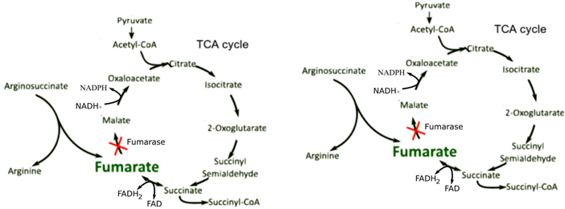
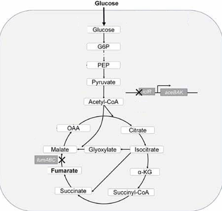
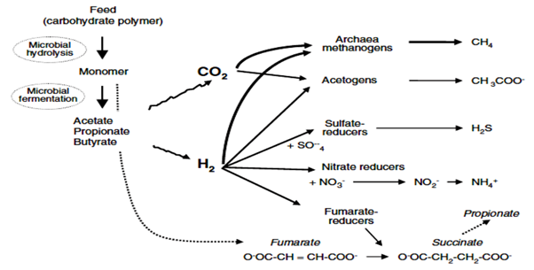

Nobody can do science on their own, so collaborating is a necessity. We had a lot of contact with the other Dutch iGEM teams, via e-mail and at the different meet-ups we attended. Our biggest collaboration is with the team from the University of Nebraska-Lincoln, with whom we had a lot of contact in the past months. Furthermore we attended three international meet-ups, in Delft, Wageningen and Leuven, where we had a lot of good conversations about science, iGEM and life.
Collaborate
University of Nebraska-Lincoln
After the UNL iGEM sent around there iGEM survey, The Amsterdam team and the UNL iGEM team got into contact about combining their knowledge and explore the possibilities of a combined future application of their projects. In this collaboration, the UNL iGEM team and the Amsterdam iGEM team joined forces to come up with a way to reduce methane emissions. Methane emissions have a huge impact on climate change. iGEM team UNL and iGEM team Amsterdam explored the possibilities of feeding fumarate to cattle, in order to reduce methane emissions. We can conclude that fumarate seems a promising molecule for this application. However, since the literature about the possible effect of fumarate is not consistent, the physiology of cattle opposes some challenges and the maximum fumarate yields in certain organisms under our specific conditions are not yet defined. Actual empirical research must show if this promising route can lead to lower methane emissions and a more sustainable world!
▶ Click here to display the full collaboration
Reducing methane emissions using thin air
iGEM UNL x iGEM Amsterdam
Introduction
In this collaboration, we combine the knowledge on genetic engineering to produce fumarate (team iGEM Amsterdam) and the knowledge on the possible impact of fumarate on cattle physiology (team iGEM UNL). Together, we explore the possibilities of using microorganisms to produce fumarate in cattle intestine, to reduce methane emissions by cattle. We explore the possibilities of ways to deliver fumarate in the cow digestive system and the hurdles to overcome with these strategies. As iGEM UNL is working on E. Coli and iGEM Amsterdam on the production of fumarate, we first define a strategy to make a fumarate producing E. Coli mutant. Then we assess the mechanism to reduce methane emissions with fumarate. Finally, we explore different ways to deliver fumarate in the cow digestive system.
How E. Coli can produce fumarate
E. Coli can in theory produce fumarate by an oxidative (aerobic) or a reductive (anaerobic) route. In the latter case, the fumarate molecule itself is used as a final electron donor in this process, which is believed to be coupled with cell growth in anaerobic conditions (Iverson et al., 1999). It is assumed that for this reason, it is not possible to genetically engineer E. Coli to produce fumarate in anaerobic conditions (Song et al., 2013). This is problematic,as the cattle rumen is anaerobic.
Now if it would be possible to introduce E. Coli in aerobic conditions in the cow’s digestive system, we would be able to use aerobically producing fumarate E. coli strains. For this, we could imitate a genetic engineering strategy used by the iGEM Amsterdam project.
How team Amsterdam produces fumarate in Cyanobacteria
In the Cyanobacterial model organism Synechocystis PCC 6803, iGEM team Amsterdam managed to produce fumarate in a genetically stable, growth-coupled way, by knocking out the fumarase encoding fumaric acid hydratase (fumC) gene.
How we can apply the Amsterdam genetic engineering strategy in E. Coli
To apply a similar approach in E. Coli and to end up with a respectable titer, multiple gene knock-outs are required. E. Coli has more fumarase encoding genes, then Synechoscystis, namely anaerobic class I fumaric acid hydratase (fumB) and aerobic class I fumaric acid hydratase (fumA), which both need to be knocked out as well (Song et al., 2013). Knocking out the Fumarase proteins leads to a dysfunctional or a ‘broken’ TCA-cycle, since malate cannot be formed anymore from fumarate. This impairs the efficiency of the TCA-cycle and the production of amino acids; since some amino acids are formed from TCA-cycle intermediates (Waegeman et al., 2011) (Fig 1a). Team Amsterdam faced a similar problem and aimed to incorporate a glyoxylate shunt into Synechocystis to increase fumarate production. The glyoxylate shunt is composed of two enzymes, which are Malate Synthase and Isocitrate Lyase. They form a shortcut in the TCA-cycle (Fig. 1b). In this way, the glyoxylate shunt restores some of the flux through part of the TCA-cycle, which should lead to a more efficient TCA-cycle. This is predicted to be beneficial for the cell in terms of fitness, as modelled by iGEM team Amsterdam. For E.coli, a similar approach could be adopted, since E.coli can express the glyoxylate shunt genes to produce malate from isocitrate via glyoxylate. Thereby, in the process of producing malate, also succinate is formed. Because the cell can produce FADH2 by converting succinate to fumarate, the formed succinate will go to fumarate. In this way we are able to gain fitness and fumarate production, by having the glyoxylate shunt active.

Figure 1. The TCA-cycle with and without glyoxylate shunt. 1a). Fumarate is produced in a growth coupled way as a side product of arginine production. By knocking out fumarase, it cannot be degraded to malate. This way Fumarate accumulates. The TCA-cycle however is ‘broken’.1b). By expressing Malate Synthaese (MS) and Isocytrate Lyase (ICL), we can partly fix the ‘broken’ cycle. Now Isocitrate is made into both glyoxylate from which malate is synthesized and into succinate, which can be converted into fumarate. This way we have a better functioning cycle and more fumarate production thanks to the glyoxylate shunt.
However, when we look at the E. Coli physiology, the glyoxylate shunt genes are already present, but repressed by a repressor encoded by the iclR gene (Waegeman et al., 2011). Deleting this gene will make it possible to have an increased flux through the TCA cycle. Using this knockout with minimal mutations, we receive an E. Coli which follows the same metabolic engineering principles as the Synechocystis strain proposed by iGEM team Amsterdam, and is therefore expected to be stable in terms of production (Fig. 2).
This strain is previously made by Song et al., (2013) and produced 1.45g/L fumaric acid from 15g/L glucose in 24h in flask culture under aerobic conditions. This strain can be further optimized for higher fumaric acid yields; however, this always comes at the risk of impairing other functions.

Figure 2. Central central metabolic pathways in E. coli after engineering E. coli for fumarate production. Thick arrows indicate increased flux by the overexpression of the corresponding gene. The X indicates that the deletion of the corresponding gene. Enzymes encoded by the genes shown are: fumA, aerobic Class I fumaric acid hydratase; fumB, anaerobic class I fumaric acid hydratase; fumC, fumaric acid hydratase (fumarase C); iclR, isocitrate lyase repressor. (Adapted from Song et al. (2013))
Fumarates effect on the microbiome of cattle
In theory, fumarate has the potential to decrease methane synthesis in cattle, as it can redirect the available hydrogen into propionate rather than into methane (Fig 3). Fumarate has been proven to reduce methane emission in both in vitro and in vivo studies (Mcginn et al., 2004). However, a recent in vivo study found no effect of adding fumarate to cattle feed on methane emission. This finding contradicts earlier findings. It is possible that a higher level of supplementation than that used in the recent study would be needed to alter methane production in vivo. It is estimated that the level of supplementation in the recent study provided about 15 mM of fumaric acid (assuming a ruminal volume of 40 L; 116.07 g/mol), although these calculations do not account for fluid dilution rate and passage of fumaric acid from the rumen, which are in vivo factors that do not occur in vitro. In vivo, cattle were fed about twice the amount of fumaric acid (20 g/kg DMI) to cattle as that used in the more recent study (12 g/kg DMI) and, surprisingly, methane production decreased by 23%. However, in that study, only two animals per treatment were used, and methane measurements were made using ventilated hoods, which are known to be problematic. Also note there were differences between basal diets in the studies. This influences the microbiomes and may affect the outcome of the study. The figure below shows the theoretical framework made by iGEM UNL, that demonstrates the diversion of hydrogen away from the methanogens and to the process of fumarate production which in turn produces succinate and propionate. It is known that the higher the propionate to acetate ratio, the less methane the cow produces (Mcginn et al., 2004).

Figure 3. The theoretical framework of the effect of fumarate on methane synthesis in the ruminants. The synthesis of succinate out of fumarate competes for H2 with the synthesis of methane. With a reduced concentration of substrate H2 for methane synthesis reaction, less methane will be formed. (Adapted from Morgavi et al. (2010))
Strategies to overcome the problem of anaerobic production
Another way to get fumarate into in the microbiome of cattle would be to have bacteria produce fumarate in a bioreactor, and then dry and directly mix them with cattle feed. This way, there is no need to extract fumarate from the cell mixture and we also overcome the problem of anaerobic production. We could try to test different types of microorganisms and see which would be the most efficient and cost-effective at producing fumarate. Once the cells have produced enough fumarate, we, dry them and feed them to the cattle. We could compare the proposed E. Coli mutants, that produce fumaric acid and cyanobacterial cells from iGEM team Amsterdam that produce fumarate and see which one is more efficient at producing and delivering fumarate. As we aim to reduce greenhouse gasses in both our projects, we think it would be sensible to define the most efficient producer as the one that is the most carbon efficient. As calculated by team Amsterdam, this will most likely be the Cyanobacteria. Cyanobacteria convert CO2 directly into fumarate, fuelled by sunlight. For E. Coli, on the contrary, you needs to grow sugar crops, harvest them, and extract the glucose as a carbon source to grow. Taking the whole process into consideration, cyanobacteria will yield more fumarate per CO2. Exploring other options such as these could provide an efficient and possibly cost-effective way to produce the fumarate that would lower methane emissions in cattle.
Conclusions
From this pleasant collaboration, we can conclude that adding fumarate to cattle feed remains a promising strategy to reduce methane emissions, although some hurdles have yet to be taken. Some studies report conflicting results about the effect of the addition of fumarate to cattle feed on methane production. Thereby, the absence of oxygen in cattle rumen opposes challenges for the growth of photoautotrophic organisms and oxidative growth of heterotrophic organisms.
On top of that, the exact yields of the strains developed by iGEM team Amsterdam and the proposed E. Coli mutant in this paper have yet to be defined. Nevertheless, as shown by the UNL iGEM team, methane emissions pose an enormous problem to our world, that need interdisciplinary teams to come up with out of the box-solutions such as these.
References
Iverson, T. M., Luna-Chavez, C., Cecchini, G., & Rees, D. C. (1999). Structure of the Escherichia coli fumarate reductase respiratory complex. Science, 284(5422), 1961-1966.
McGinn, S. M., Beauchemin, K. A., Coates, T., & Colombatto, D. (2004). Methane emissions from beef cattle: Effects of monensin, sunflower oil, enzymes, yeast, and fumaric acid. Journal of animal science, 82(11), 3346-3356.
Song, C. W., Kim, D. I., Choi, S., Jang, J. W., & Lee, S. Y. (2013). Metabolic engineering of Escherichia coli for the production of fumaric acid. Biotechnology and bioengineering, 110(7), 2025-2034.
Waegeman, H., Beauprez, J., Moens, H., Maertens, J., De Mey, M., Foulquié-Moreno, M. R., ... & Soetaert, W. (2011). Effect of iclR and arcA knockouts on biomass formation and metabolic fluxes in Escherichia coli K12 and its implications on understanding the metabolism of Escherichia coli BL21 (DE3). BMC microbiology, 11(1), 70.
TThe first non-dutch iGEM contact we made was with the team from Lund, Sweden. Their university participated for the first time. We arranged a Skype meeting and shared to them our approach on different subjects. They had a lot of questions for us and we brainstormed with them about things like funding and time management. Thanks team Lund!
TU Delft
In our early iGEM days we made contact with the iGEM team from Delft. They helped us out with questions we had about our wiki and in return we helped them out with some questions they had on bioinformatics. We have had a lot of contact with team Delft after this and would like to thank them for the pleasant collaboration.
Meet-up Wageningen
The Wageningen iGEM team organised a Benelux iGEM meet-up, here we had the opportunity to present our project to other teams for the first time. It was a nice initiator to think about how to present our project and to meet the other teams and learn about their projects. Thanks iGEM Wageningen!
Meet-up Delft
The iGEM team from the TUDelft hosted a European iGEM meet-up, in which we participated. During this conference three speakers talked about synthetic biology in their field of work. After that every team presented their posters to all the other teams. We enjoyed the day and learned a lot of the poster presentation, therefore we want to thank the TUDelft iGEM team!
Meet-up Leuven
A month before the Giant Jamboree the team from KU Leuven organized a practice jamboree. During this event we got to practice our presentation and received feedback from the other teams. There were also some very inspiring speakers, that talked about being a scientist and the industrialization of products. It was a very informative afternoon and we are very grateful that the Leuven team set up this meeting!
We did a lot of surveys to help as much iGEM teams with their research, most of them we found on the collaboration page of iGEM and we recieved the others via mail or Facebook: